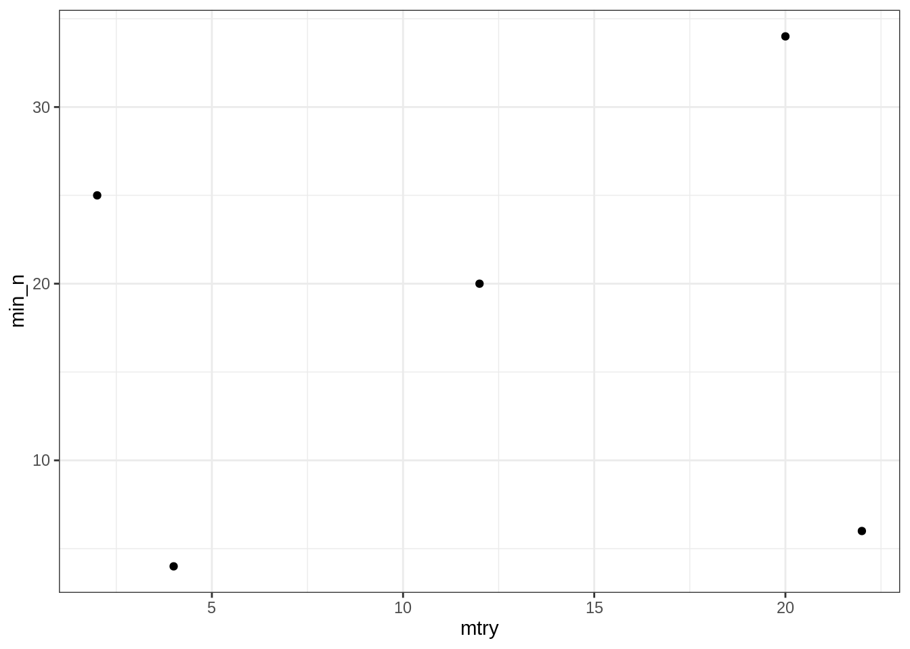

Comme tidyverse, tidymodels est un métapackage. Il a été créé et est maintenu (entre autre) par l’auteur de caret, et a pour but de le remplacer.
library(tidymodels)## ── Attaching packages ────────────────────────────────────── tidymodels 0.1.1 ──## ✔ broom 0.7.0 ✔ recipes 0.1.13
## ✔ dials 0.0.8 ✔ rsample 0.0.7
## ✔ infer 0.5.3 ✔ tune 0.1.1
## ✔ modeldata 0.0.2 ✔ workflows 0.1.3
## ✔ parsnip 0.1.3 ✔ yardstick 0.0.7## ── Conflicts ───────────────────────────────────────── tidymodels_conflicts() ──
## ✖ nlme::collapse() masks dplyr::collapse()
## ✖ scales::discard() masks purrr::discard()
## ✖ Matrix::expand() masks tidyr::expand()
## ✖ dplyr::filter() masks stats::filter()
## ✖ recipes::fixed() masks stringr::fixed()
## ✖ infer::generate() masks distributional::generate()
## ✖ dplyr::lag() masks stats::lag()
## ✖ Matrix::pack() masks tidyr::pack()
## ✖ MASS::select() masks dplyr::select()
## ✖ yardstick::spec() masks readr::spec()
## ✖ recipes::step() masks stats::step()
## ✖ Matrix::unpack() masks tidyr::unpack()library(modeldata)
library(forcats)
library(skimr)
library(vip)##
## Attaching package: 'vip'## The following object is masked from 'package:utils':
##
## vitheme_set(theme_bw())
set.seed(42)data("stackoverflow")
stackoverflow## # A tibble: 5,594 x 21
## Country Salary YearsCodedJob OpenSource Hobby CompanySizeNumb… Remote
## <fct> <dbl> <int> <dbl> <dbl> <dbl> <fct>
## 1 United… 1.00e5 20 0 1 5000 Remote
## 2 United… 1.30e5 20 1 1 1000 Remote
## 3 United… 1.75e5 16 0 1 10000 Not r…
## 4 Germany 6.45e4 4 0 0 1000 Not r…
## 5 India 6.64e3 1 0 1 5000 Not r…
## 6 United… 6.50e4 1 0 1 20 Not r…
## 7 United… 1.10e5 13 0 1 20 Not r…
## 8 Germany 5.38e4 4 1 0 5000 Not r…
## 9 United… 1.09e5 7 1 1 20 Not r…
## 10 Germany 8.39e4 17 1 1 20 Not r…
## # … with 5,584 more rows, and 14 more variables: CareerSatisfaction <int>,
## # Data_scientist <dbl>, Database_administrator <dbl>,
## # Desktop_applications_developer <dbl>,
## # Developer_with_stats_math_background <dbl>, DevOps <dbl>,
## # Embedded_developer <dbl>, Graphic_designer <dbl>,
## # Graphics_programming <dbl>, Machine_learning_specialist <dbl>,
## # Mobile_developer <dbl>, Quality_assurance_engineer <dbl>,
## # Systems_administrator <dbl>, Web_developer <dbl>skim(stackoverflow)| Name | stackoverflow |
| Number of rows | 5594 |
| Number of columns | 21 |
| _______________________ | |
| Column type frequency: | |
| factor | 2 |
| numeric | 19 |
| ________________________ | |
| Group variables | None |
Variable type: factor
| skim_variable | n_missing | complete_rate | ordered | n_unique | top_counts |
|---|---|---|---|---|---|
| Country | 0 | 1 | FALSE | 5 | Uni: 2791, Uni: 1023, Ger: 757, Ind: 538 |
| Remote | 0 | 1 | FALSE | 2 | Not: 5019, Rem: 575 |
Variable type: numeric
| skim_variable | n_missing | complete_rate | mean | sd | p0 | p25 | p50 | p75 | p100 | hist |
|---|---|---|---|---|---|---|---|---|---|---|
| Salary | 0 | 1 | 71969.10 | 40003.65 | 1136.36 | 45018.94 | 65000 | 100000 | 197000 | ▃▇▅▂▁ |
| YearsCodedJob | 0 | 1 | 7.45 | 5.96 | 0.00 | 3.00 | 5 | 11 | 20 | ▇▅▂▂▂ |
| OpenSource | 0 | 1 | 0.34 | 0.48 | 0.00 | 0.00 | 0 | 1 | 1 | ▇▁▁▁▅ |
| Hobby | 0 | 1 | 0.76 | 0.43 | 0.00 | 1.00 | 1 | 1 | 1 | ▂▁▁▁▇ |
| CompanySizeNumber | 0 | 1 | 2138.55 | 3754.60 | 1.00 | 20.00 | 100 | 1000 | 10000 | ▇▁▁▁▂ |
| CareerSatisfaction | 0 | 1 | 7.58 | 1.68 | 0.00 | 7.00 | 8 | 9 | 10 | ▁▁▂▇▅ |
| Data_scientist | 0 | 1 | 0.07 | 0.26 | 0.00 | 0.00 | 0 | 0 | 1 | ▇▁▁▁▁ |
| Database_administrator | 0 | 1 | 0.14 | 0.34 | 0.00 | 0.00 | 0 | 0 | 1 | ▇▁▁▁▁ |
| Desktop_applications_developer | 0 | 1 | 0.28 | 0.45 | 0.00 | 0.00 | 0 | 1 | 1 | ▇▁▁▁▃ |
| Developer_with_stats_math_background | 0 | 1 | 0.11 | 0.31 | 0.00 | 0.00 | 0 | 0 | 1 | ▇▁▁▁▁ |
| DevOps | 0 | 1 | 0.12 | 0.33 | 0.00 | 0.00 | 0 | 0 | 1 | ▇▁▁▁▁ |
| Embedded_developer | 0 | 1 | 0.08 | 0.27 | 0.00 | 0.00 | 0 | 0 | 1 | ▇▁▁▁▁ |
| Graphic_designer | 0 | 1 | 0.03 | 0.16 | 0.00 | 0.00 | 0 | 0 | 1 | ▇▁▁▁▁ |
| Graphics_programming | 0 | 1 | 0.03 | 0.18 | 0.00 | 0.00 | 0 | 0 | 1 | ▇▁▁▁▁ |
| Machine_learning_specialist | 0 | 1 | 0.03 | 0.17 | 0.00 | 0.00 | 0 | 0 | 1 | ▇▁▁▁▁ |
| Mobile_developer | 0 | 1 | 0.20 | 0.40 | 0.00 | 0.00 | 0 | 0 | 1 | ▇▁▁▁▂ |
| Quality_assurance_engineer | 0 | 1 | 0.03 | 0.18 | 0.00 | 0.00 | 0 | 0 | 1 | ▇▁▁▁▁ |
| Systems_administrator | 0 | 1 | 0.11 | 0.31 | 0.00 | 0.00 | 0 | 0 | 1 | ▇▁▁▁▁ |
| Web_developer | 0 | 1 | 0.72 | 0.45 | 0.00 | 0.00 | 1 | 1 | 1 | ▃▁▁▁▇ |
On utilise le package rsample pour séparer notre jeu de données en deux.
split <- initial_split(stackoverflow, prop = 0.8, strata = Country)
split## <Analysis/Assess/Total>
## <4476/1118/5594>df_train <- training(split)
df_train## # A tibble: 4,476 x 21
## Country Salary YearsCodedJob OpenSource Hobby CompanySizeNumb… Remote
## <fct> <dbl> <int> <dbl> <dbl> <dbl> <fct>
## 1 United… 1.00e5 20 0 1 5000 Remote
## 2 India 6.64e3 1 0 1 5000 Not r…
## 3 United… 6.50e4 1 0 1 20 Not r…
## 4 United… 1.10e5 13 0 1 20 Not r…
## 5 Germany 5.38e4 4 1 0 5000 Not r…
## 6 United… 1.09e5 7 1 1 20 Not r…
## 7 Germany 8.39e4 17 1 1 20 Not r…
## 8 United… 5.10e4 1 0 0 20 Not r…
## 9 United… 3.25e4 1 1 0 10 Not r…
## 10 United… 9.00e4 10 1 0 10 Not r…
## # … with 4,466 more rows, and 14 more variables: CareerSatisfaction <int>,
## # Data_scientist <dbl>, Database_administrator <dbl>,
## # Desktop_applications_developer <dbl>,
## # Developer_with_stats_math_background <dbl>, DevOps <dbl>,
## # Embedded_developer <dbl>, Graphic_designer <dbl>,
## # Graphics_programming <dbl>, Machine_learning_specialist <dbl>,
## # Mobile_developer <dbl>, Quality_assurance_engineer <dbl>,
## # Systems_administrator <dbl>, Web_developer <dbl>df_test <- testing(split)
df_test## # A tibble: 1,118 x 21
## Country Salary YearsCodedJob OpenSource Hobby CompanySizeNumb… Remote
## <fct> <dbl> <int> <dbl> <dbl> <dbl> <fct>
## 1 United… 1.30e5 20 1 1 1000 Remote
## 2 United… 1.75e5 16 0 1 10000 Not r…
## 3 Germany 6.45e4 4 0 0 1000 Not r…
## 4 United… 3.00e4 1 0 1 20 Not r…
## 5 United… 3.25e4 2 0 1 10 Not r…
## 6 United… 1.14e5 20 1 1 20 Not r…
## 7 United… 1.00e5 14 0 1 20 Not r…
## 8 Germany 1.08e4 1 0 1 10 Not r…
## 9 United… 5.00e4 2 1 1 10 Not r…
## 10 United… 6.38e4 17 0 1 500 Not r…
## # … with 1,108 more rows, and 14 more variables: CareerSatisfaction <int>,
## # Data_scientist <dbl>, Database_administrator <dbl>,
## # Desktop_applications_developer <dbl>,
## # Developer_with_stats_math_background <dbl>, DevOps <dbl>,
## # Embedded_developer <dbl>, Graphic_designer <dbl>,
## # Graphics_programming <dbl>, Machine_learning_specialist <dbl>,
## # Mobile_developer <dbl>, Quality_assurance_engineer <dbl>,
## # Systems_administrator <dbl>, Web_developer <dbl>Le package recipes permet de créer des recettes afin de préparer les données pour l’analyse. Ici, on va binariser les variables factorielles (Country et Remote) puis on normalise tous les prédicteurs (donc toutes les variables sauf Salary).
rec <-
recipe(df_train, Salary ~ .) %>%
step_dummy(Country, Remote) %>%
step_normalize(all_predictors())
rec## Data Recipe
##
## Inputs:
##
## role #variables
## outcome 1
## predictor 20
##
## Operations:
##
## Dummy variables from Country, Remote
## Centering and scaling for all_predictors()Pour l’instant, on a spécifié la recette, mais on ne l’a pas entrainée. Pour cela, on utilise la fonction prep.
prep(rec)## Data Recipe
##
## Inputs:
##
## role #variables
## outcome 1
## predictor 20
##
## Training data contained 4476 data points and no missing data.
##
## Operations:
##
## Dummy variables from Country, Remote [trained]
## Centering and scaling for YearsCodedJob, OpenSource, ... [trained]On a accès aux paramètres de préparation des données via la fonction tidy sur la recette entrainée. On regarde ici les quantités pour centrer et réduire chaque variable, soit la deuxième étape de la recette.
rec %>%
prep() %>%
tidy(2) %>%
arrange(terms)## # A tibble: 46 x 4
## terms statistic value id
## <chr> <chr> <dbl> <chr>
## 1 CareerSatisfaction mean 7.59 normalize_YORAj
## 2 CareerSatisfaction sd 1.68 normalize_YORAj
## 3 CompanySizeNumber mean 2123. normalize_YORAj
## 4 CompanySizeNumber sd 3744. normalize_YORAj
## 5 Country_Germany mean 0.133 normalize_YORAj
## 6 Country_Germany sd 0.340 normalize_YORAj
## 7 Country_India mean 0.0963 normalize_YORAj
## 8 Country_India sd 0.295 normalize_YORAj
## 9 Country_United.Kingdom mean 0.184 normalize_YORAj
## 10 Country_United.Kingdom sd 0.387 normalize_YORAj
## # … with 36 more rowsPour appliquer la recette au jeu de donnée qui a servi à l’entraîner, on utilise juice.
juiced <-
rec %>%
prep() %>%
juice()On a bien binarisé et centré les variables.
colnames(juiced)## [1] "YearsCodedJob"
## [2] "OpenSource"
## [3] "Hobby"
## [4] "CompanySizeNumber"
## [5] "CareerSatisfaction"
## [6] "Data_scientist"
## [7] "Database_administrator"
## [8] "Desktop_applications_developer"
## [9] "Developer_with_stats_math_background"
## [10] "DevOps"
## [11] "Embedded_developer"
## [12] "Graphic_designer"
## [13] "Graphics_programming"
## [14] "Machine_learning_specialist"
## [15] "Mobile_developer"
## [16] "Quality_assurance_engineer"
## [17] "Systems_administrator"
## [18] "Web_developer"
## [19] "Salary"
## [20] "Country_Germany"
## [21] "Country_India"
## [22] "Country_United.Kingdom"
## [23] "Country_United.States"
## [24] "Remote_Not.remote"mean(juiced$YearsCodedJob)## [1] -3.929356e-17var(juiced$YearsCodedJob)## [1] 1Pour appliquer la recette à un autre jeu de données, il faut utilise bake.
rec %>%
prep() %>%
bake(df_test) %>%
pull(YearsCodedJob) %>%
mean()## [1] -0.006506893On remarque que ça n’est pas centré : on a normalisé le jeu de données de test avec la moyenne et la variance du jeu de données d’entraînement.
On crée un modèle de régression avec parsnip::linear_reg.
spec_lr <-
linear_reg() %>%
set_engine("lm")
spec_lr## Linear Regression Model Specification (regression)
##
## Computational engine: lmLe workflow est l’objet central de l’anaylse : il combine une recette (ou une formule) et une spécification de modèle.
wkf_lr <-
workflow() %>%
add_recipe(rec) %>%
add_model(spec_lr)
wkf_lr## ══ Workflow ════════════════════════════════════════════════════════════════════
## Preprocessor: Recipe
## Model: linear_reg()
##
## ── Preprocessor ────────────────────────────────────────────────────────────────
## 2 Recipe Steps
##
## ● step_dummy()
## ● step_normalize()
##
## ── Model ───────────────────────────────────────────────────────────────────────
## Linear Regression Model Specification (regression)
##
## Computational engine: lmOn ajuste le workflow sur le jeu de données d’apprentissage.
wkf_lr_fit <-
wkf_lr %>%
fit(df_train)
wkf_lr_fit## ══ Workflow [trained] ══════════════════════════════════════════════════════════
## Preprocessor: Recipe
## Model: linear_reg()
##
## ── Preprocessor ────────────────────────────────────────────────────────────────
## 2 Recipe Steps
##
## ● step_dummy()
## ● step_normalize()
##
## ── Model ───────────────────────────────────────────────────────────────────────
##
## Call:
## stats::lm(formula = ..y ~ ., data = data)
##
## Coefficients:
## (Intercept) YearsCodedJob
## 71691.2 14438.0
## OpenSource Hobby
## 1942.5 332.5
## CompanySizeNumber CareerSatisfaction
## 3705.2 1722.6
## Data_scientist Database_administrator
## 461.9 -1586.8
## Desktop_applications_developer Developer_with_stats_math_background
## -2294.7 789.2
## DevOps Embedded_developer
## 1467.8 299.5
## Graphic_designer Graphics_programming
## -1517.5 -240.9
## Machine_learning_specialist Mobile_developer
## 855.7 202.2
## Quality_assurance_engineer Systems_administrator
## -743.9 -1150.8
## Web_developer Country_Germany
## -1610.7 -1780.0
## Country_India Country_United.Kingdom
## -11466.7 -1311.1
## Country_United.States Remote_Not.remote
## 17885.6 -836.5On peut extraire le modèle ajusté avec pull_workflow_fit.
fit_lr <-
wkf_lr_fit %>%
pull_workflow_fit()
fit_lr ## parsnip model object
##
## Fit time: 7ms
##
## Call:
## stats::lm(formula = ..y ~ ., data = data)
##
## Coefficients:
## (Intercept) YearsCodedJob
## 71691.2 14438.0
## OpenSource Hobby
## 1942.5 332.5
## CompanySizeNumber CareerSatisfaction
## 3705.2 1722.6
## Data_scientist Database_administrator
## 461.9 -1586.8
## Desktop_applications_developer Developer_with_stats_math_background
## -2294.7 789.2
## DevOps Embedded_developer
## 1467.8 299.5
## Graphic_designer Graphics_programming
## -1517.5 -240.9
## Machine_learning_specialist Mobile_developer
## 855.7 202.2
## Quality_assurance_engineer Systems_administrator
## -743.9 -1150.8
## Web_developer Country_Germany
## -1610.7 -1780.0
## Country_India Country_United.Kingdom
## -11466.7 -1311.1
## Country_United.States Remote_Not.remote
## 17885.6 -836.5tidy(fit_lr)## # A tibble: 24 x 5
## term estimate std.error statistic p.value
## <chr> <dbl> <dbl> <dbl> <dbl>
## 1 (Intercept) 71691. 342. 210. 0.
## 2 YearsCodedJob 14438. 364. 39.7 2.70e-295
## 3 OpenSource 1943. 356. 5.46 4.92e- 8
## 4 Hobby 333. 350. 0.949 3.42e- 1
## 5 CompanySizeNumber 3705. 350. 10.6 7.39e- 26
## 6 CareerSatisfaction 1723. 350. 4.92 8.81e- 7
## 7 Data_scientist 462. 383. 1.21 2.28e- 1
## 8 Database_administrator -1587. 393. -4.04 5.46e- 5
## 9 Desktop_applications_developer -2295. 360. -6.37 2.09e- 10
## 10 Developer_with_stats_math_background 789. 359. 2.20 2.80e- 2
## # … with 14 more rowsOn peut prédire avec la fonction predict.
wkf_lr_fit %>%
predict(df_train)## # A tibble: 4,476 x 1
## .pred
## <dbl>
## 1 95665.
## 2 3812.
## 3 76595.
## 4 104515.
## 5 50056.
## 6 94181.
## 7 80331.
## 8 77865.
## 9 41784.
## 10 101619.
## # … with 4,466 more rowsOn fait de même sur l’ensemble de test.
df_test_lr <-
wkf_lr_fit %>%
predict(df_test) %>%
bind_cols(df_test)
df_test_lr## # A tibble: 1,118 x 22
## .pred Country Salary YearsCodedJob OpenSource Hobby CompanySizeNumb… Remote
## <dbl> <fct> <dbl> <int> <dbl> <dbl> <dbl> <fct>
## 1 1.33e5 United… 1.30e5 20 1 1 1000 Remote
## 2 1.22e5 United… 1.75e5 16 0 1 10000 Not r…
## 3 4.40e4 Germany 6.45e4 4 0 0 1000 Not r…
## 4 3.29e4 United… 3.00e4 1 0 1 20 Not r…
## 5 3.98e4 United… 3.25e4 2 0 1 10 Not r…
## 6 8.83e4 United… 1.14e5 20 1 1 20 Not r…
## 7 1.03e5 United… 1.00e5 14 0 1 20 Not r…
## 8 3.30e4 Germany 1.08e4 1 0 1 10 Not r…
## 9 7.49e4 United… 5.00e4 2 1 1 10 Not r…
## 10 7.28e4 United… 6.38e4 17 0 1 500 Not r…
## # … with 1,108 more rows, and 14 more variables: CareerSatisfaction <int>,
## # Data_scientist <dbl>, Database_administrator <dbl>,
## # Desktop_applications_developer <dbl>,
## # Developer_with_stats_math_background <dbl>, DevOps <dbl>,
## # Embedded_developer <dbl>, Graphic_designer <dbl>,
## # Graphics_programming <dbl>, Machine_learning_specialist <dbl>,
## # Mobile_developer <dbl>, Quality_assurance_engineer <dbl>,
## # Systems_administrator <dbl>, Web_developer <dbl>On calcule le RMSE et le R² sur l’ensemble de test avec des fonctions du package yardstick.
my_metrics <- metric_set(rmse, rsq)
my_metrics(df_test_lr, truth = Salary, estimate = .pred)## # A tibble: 2 x 3
## .metric .estimator .estimate
## <chr> <chr> <dbl>
## 1 rmse standard 23774.
## 2 rsq standard 0.661Spécification du modèle et du workflow associé.
spec_rf <-
rand_forest(trees = 1000, min_n = tune(), mtry = tune()) %>%
set_mode("regression") %>%
set_engine("ranger", importance = "impurity") # importance pour vip
spec_rf## Random Forest Model Specification (regression)
##
## Main Arguments:
## mtry = tune()
## trees = 1000
## min_n = tune()
##
## Engine-Specific Arguments:
## importance = impurity
##
## Computational engine: rangerwkf_rf <-
workflow() %>%
add_recipe(rec) %>%
add_model(spec_rf)On va déterminer la région dans laquelle on va optimiser les paramètres grâce au package dials. min_n a des valeurs limite par défaut mais il faut ajuster mtry par rapport au jeu de données. On crée ensuite un grille non régulière qui maximise l’entropie.
grid <- grid_max_entropy(min_n(),
finalize(mtry(), dplyr::select(juiced, -Salary)),
size = 20)
grid## # A tibble: 20 x 2
## min_n mtry
## <int> <int>
## 1 6 5
## 2 12 13
## 3 22 2
## 4 7 22
## 5 20 12
## 6 22 8
## 7 4 2
## 8 40 10
## 9 28 15
## 10 2 19
## 11 10 1
## 12 29 22
## 13 13 4
## 14 14 17
## 15 21 20
## 16 38 21
## 17 40 4
## 18 2 11
## 19 36 12
## 20 30 8On a finalisé mtry car la plage de valeur que cet hyperparamètre peut prendre dépend du jeu de données (le nombre de prédicteurs en l’occurence).
ggplot(grid) +
aes(mtry, min_n) +
geom_point()
k-folds pour la cross-validation, avec rsample.
kfolds <- vfold_cv(df_train)
kfolds## # 10-fold cross-validation
## # A tibble: 10 x 2
## splits id
## <list> <chr>
## 1 <split [4K/448]> Fold01
## 2 <split [4K/448]> Fold02
## 3 <split [4K/448]> Fold03
## 4 <split [4K/448]> Fold04
## 5 <split [4K/448]> Fold05
## 6 <split [4K/448]> Fold06
## 7 <split [4K/447]> Fold07
## 8 <split [4K/447]> Fold08
## 9 <split [4K/447]> Fold09
## 10 <split [4K/447]> Fold10On optimise avec tune.
tuned <- tune_grid(wkf_rf, resamples = kfolds, grid = grid,
control = control_grid(verbose = FALSE),
metrics = my_metrics)
tunedOn inspecte les modèles.
autoplot(tuned)
collect_metrics(tuned)
show_best(tuned, metric = "rmse")
select_best(tuned, metric = "rmse")On ajuste un modèle avec les meilleurs paramètres. Après avoir défini les hyperparamètres du modèle via finalize_workflow, la fonction last_fit apprend les paramètres du modèle sur le jeu de d’entrainement et prédit sur le jeu de données test.
wkf_rf_fit <-
tuned %>%
select_best(metric = "rmse") %>%
finalize_workflow(wkf_rf, .) %>%
last_fit(split, metrics = my_metrics)Calcul des métriques de ce dernier modèle.
collect_metrics(wkf_rf_fit)On rapelle que le RMSE pour la regression linéaire vaut 2.3774^{4}.
On va utiliser le package vip pour calculer le poids des différentes variables dans chaque modèle.
vi(fit_lr)
fit_lr %>%
vi() %>%
mutate(Variable = fct_rev(as_factor(Variable))) %>%
ggplot() +
aes(x = Importance, y = Variable, fill = Sign) +
geom_col() +
labs(y = NULL)fit_rf <-
wkf_rf_fit %>%
pull(.workflow) %>%
first() %>%
pull_workflow_fit()
vi(fit_rf)
vip(fit_rf)sessionInfo()